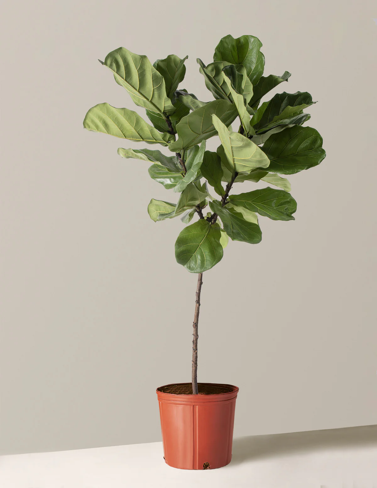
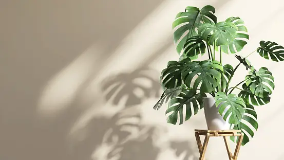

Fiddle-Leaf Fig (Ficus lyrata)

- Dramatic
- Gives Up Easily
- Can't Handle Change
If it's moved even a foot it will drop its leaves. Similarly, as light and temperatures change with the seasons, it can drop its leaves in protest even without moving it from your sunniest window. There can sometimes be no winning with this one.
Monstera Deliciosa (a.k.a Swiss Cheese Plant)

- Huge, Flashy Personality
- Takes Over A Room
- Climbs All Over and Uses Others
Monsteras can grow up to 70 feet tall in the wild and develop beautiful fenestrations of their leaves that resemble the holes in Swiss cheese. They have a vine-like nature that means they require something else to climb up in order to reach their maximum size. As long as you give them enough light, water, and space, they eaily grow like weeds!